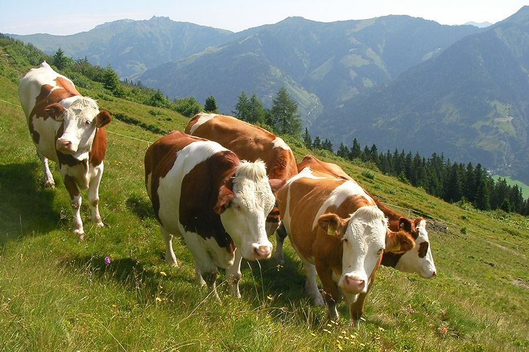
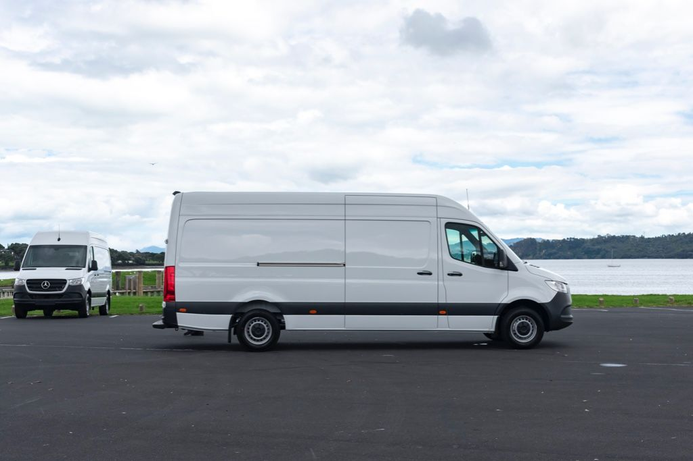
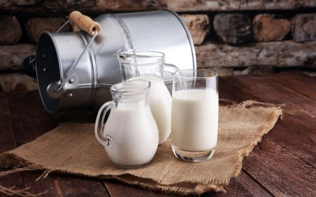

Sign In
.png)
Totul a început cu o mică fermă de familie, unde laptele era mai mult decât un simplu
La Poiana Laptelui, ne dorim să creștem responsabil și să rămânem fideli valorilor noastre. Planurile noastre includ:
#Poiana Laptelui
Povestea Noastra
Cum am inceput?
Totul a început cu o mică fermă de familie, unde laptele era mai mult decât un simplu
aliment, era parte din viața de zi cu zi. Acolo, tradițiile vechi de prelucrare a laptelui erau păstrate cu grijă, iar fiecare produs era făcut manual, cu răbdare și atenție la detalii.
Cu timpul, oamenii din împrejurimi au început să aprecieze gustul autentic al brânzeturilor și al iaurturilor făcute în casă. Cererea pentru aceste produse naturale a crescut, iar micii producători au realizat că ar putea împărtăși aceste bunătăți cu mai mulți oameni.
Inspirată de frumusețea locului și de dorința de a păstra vie tradiția, a luat naștere Poiana Laptelui – o afacere care îmbină metodele tradiționale de prelucrare cu standardele moderne de calitate. Laptele folosit provine de la animale crescute liber în aer curat, hrănite cu iarbă proaspătă din poienile înconjurătoare. Fiecare produs – de la untul fin până la brânza maturată – reflectă gustul simplu și curat al naturii.
Astăzi, Poiana Laptelui este sinonimă cu autenticitatea și respectul pentru natură. Produsele noastre duc mai departe povestea locurilor de unde provin, amintind fiecăruia de bucuria lucrurilor simple și autentice.

Unde am ajuns?
Astăzi, Poiana Laptelui nu mai este doar o mică poveste locală, ci un nume cunoscut în toată România. De la începuturile noastre modeste, am crescut cu grijă și responsabilitate, păstrând mereu esența care ne definește: produse naturale, autentice, făcute cu respect pentru tradiție și pentru natură. Produsele noastre sunt acum disponibile în magazine din întreaga țară, dar și prin comenzi online, astfel încât să ajungem la cât mai mulți oameni care apreciază gustul autentic și calitatea. În fiecare borcan de iaurt, fiecare bucată de brânză și fiecare pachet de unt fin se regăsește munca noastră, dar și frumusețea locului de unde provine totul. Ne mândrim că am câștigat încrederea clienților noștri și că am devenit o parte din mesele și momentele lor speciale. De la gospodării tradiționale până la restaurante de top care ne-au ales ca parteneri, produsele Poiana Laptelui aduc bucurie și gustul naturii autentice în casele oamenilor.

Ce obiective avem?
La Poiana Laptelui, ne dorim să creștem responsabil și să rămânem fideli valorilor noastre. Planurile noastre includ:
- Extinderea gamei de produse lactate, adăugând noi sortimente naturale și sănătoase.
- Colaborarea cu mai multe ferme locale pentru a sprijini comunitățile rurale.
- Dezvoltarea unor ambalaje sustenabile, prietenoase cu mediul.
- Creșterea prezenței pe piața națională și explorarea posibilităților de export.
Prin toate acestea, ne propunem să oferim produse de calitate, să protejăm natura și să aducem gustul autentic al tradiției în cât mai multe case.
